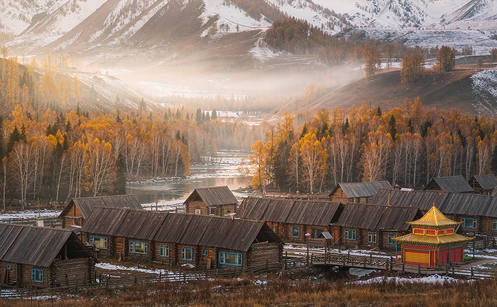

城市散步
City walk
進山之前，先在河邊慢下來
布爾津很小，小到一晚就夠；但也剛好夠你記住一整趟北疆。
路線一覽
這條路線專門為「傍晚抵達」設計。長途拉車之後，與其再排景點，不如把三個小時交給河岸與夜市。
- 17:00–18:30 布爾津大橋與額爾齊斯河
- 18:30–19:30 俄羅斯風情街
- 19:30–22:00 河堤夜市
第一站：布爾津大橋與額爾齊斯河（17:00–18:30）
額爾齊斯河是中國唯一流入北冰洋的河系，傍晚光線斜照在河面與白樺林上，氣溫也終於降下來。橋上風大，記得帶件外套。
- 沿河步道平緩好走，適合長輩與小孩
- 日落前後半小時光線最好
- 想看五彩灘的岩層需另外安排車程，別硬擠進散步路線
第二站：俄羅斯風情街（18:30–19:30）
因為地緣與歷史，這座小城留了一批彩色木屋與俄式窗飾。街區不大，半小時能走完，重點是黃昏燈亮起來時那種邊城的安靜。
第三站：河堤夜市（19:30–22:00）
重頭戲是烤魚。額爾齊斯河的冷水魚以炭火慢烤，撒上孜然與辣椒，配一杯卡瓦斯或格瓦斯，就是布爾津最標準的一餐。
- 必吃：烤狗魚、烤羊肉串、椒麻雞、卡瓦斯
- 魚依大小計價，點餐前先確認重量與價格
- 夏季入夜後才熱鬧，太早到攤位還沒全開
布爾津是北疆路線的必經站。從烏魯木齊走 S21 沙漠公路北上，第一天通常落腳這裡；隔天進喀納斯與禾木，車程會明顯變短。
實用資訊
- 住宿：旺季（7–8 月、金秋）需提早確認，小城房量有限
- 氣候：河畔傍晚風大偏涼，即使夏季也帶薄外套
- 交通：城區步行可達，往五彩灘與禾木需包車
- 付款：夜市多支援行動支付，備少量現金更穩
在布爾津住一晚，隔天進山會從容很多。這也是我們在 16、17 日行程裡固定留它的原因。